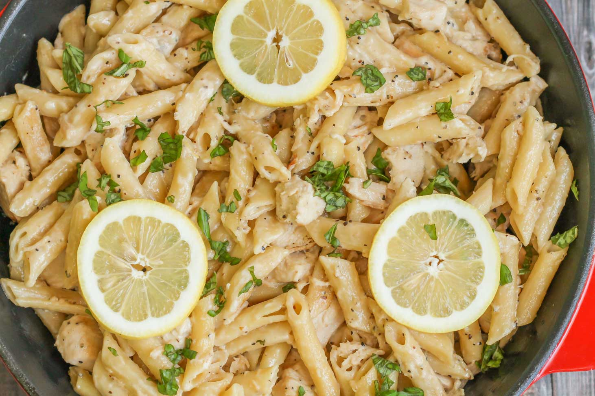

Cheesy Lemon Chicken Pasta

Pecorino Romano and Parmesan give cheesy flavor to this easy lemon-chicken
pasta dish that's sure to please the whole family!
Great easy pasta, and definitely pleases the family like the recipe says.
That being said, I personally think it needs a little more seasoning, so I
recommend adding some more salt, pepper, and possibly a little garlic powder
to taste.
Great easy pasta, and definitely pleases the family like the recipe says.
That being said, I personally think it needs a little more seasoning, so
I recommend adding some more salt, pepper, and possibly a little garlic powder
to taste.
Ingredients
- 1 (16 ounce) package linguine pasta
- 1 cup frozen peas
- 2 tablespoons butter
- 2 tablespoons olive oil
- 1 (8 ounce) package button mushrooms, sliced
- ½ cup diced onion
- 1 pound skinless, boneless chicken breasts, cut into 1-inch chunks
- kosher salt and ground black pepper to taste
- ½ (8 ounce) package reduced-fat cream cheese, cubed and softened
- ¼ cup fresh lemon juice
- 2 teaspoons lemon zest
- ½ cup grated Parmesan cheese
- ¼ cup grated Pecorino Romano cheese
- ¼ cup chopped flat-leaf (Italian) parsley
- 1/4 cup water